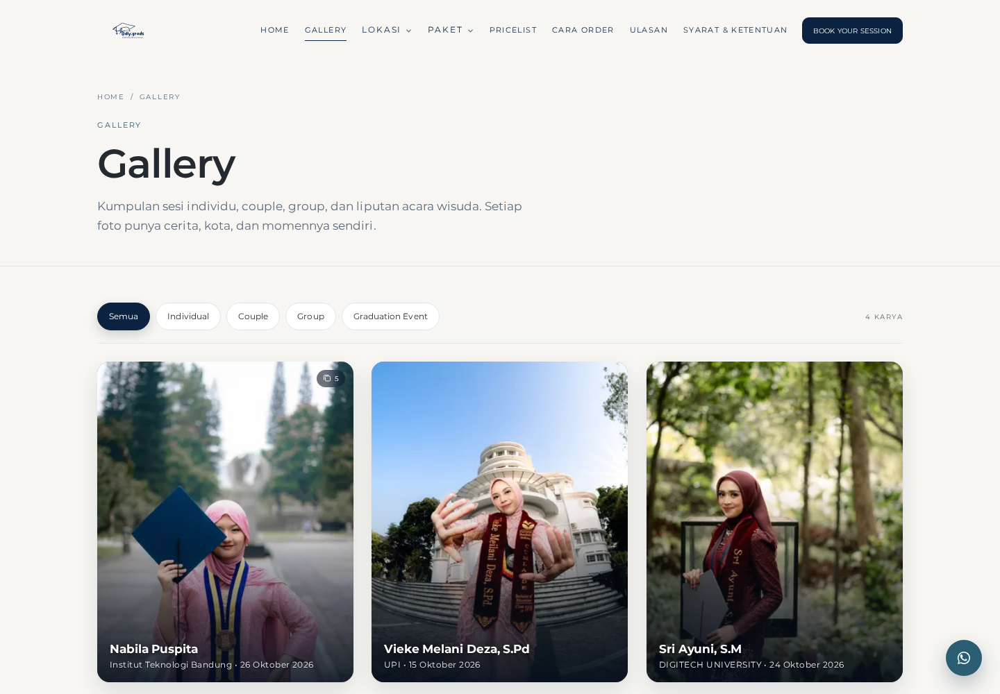
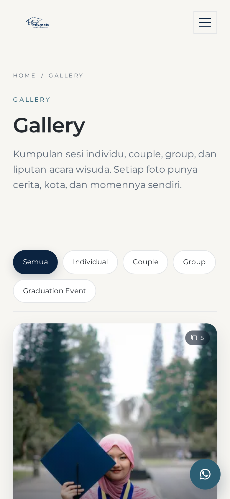
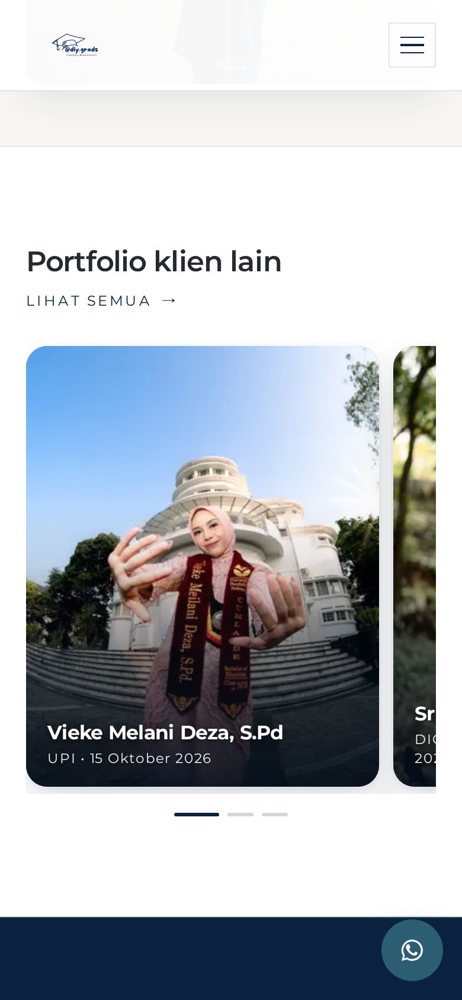
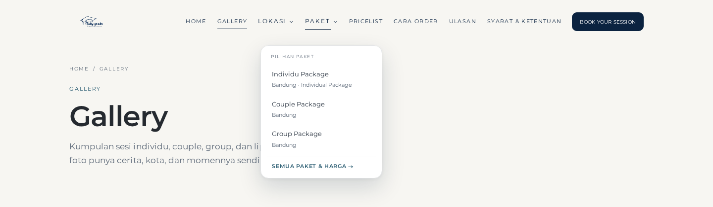
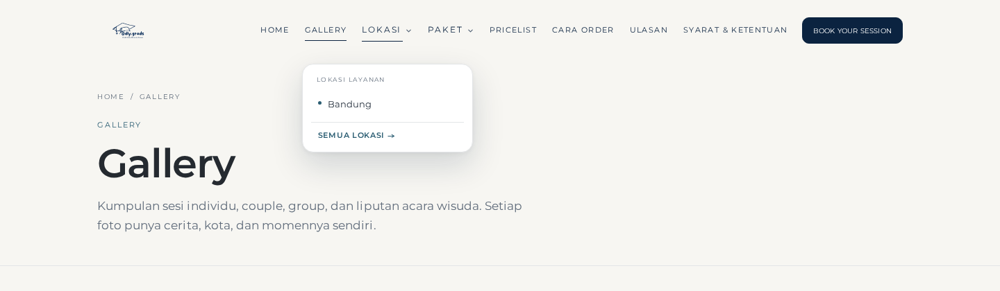
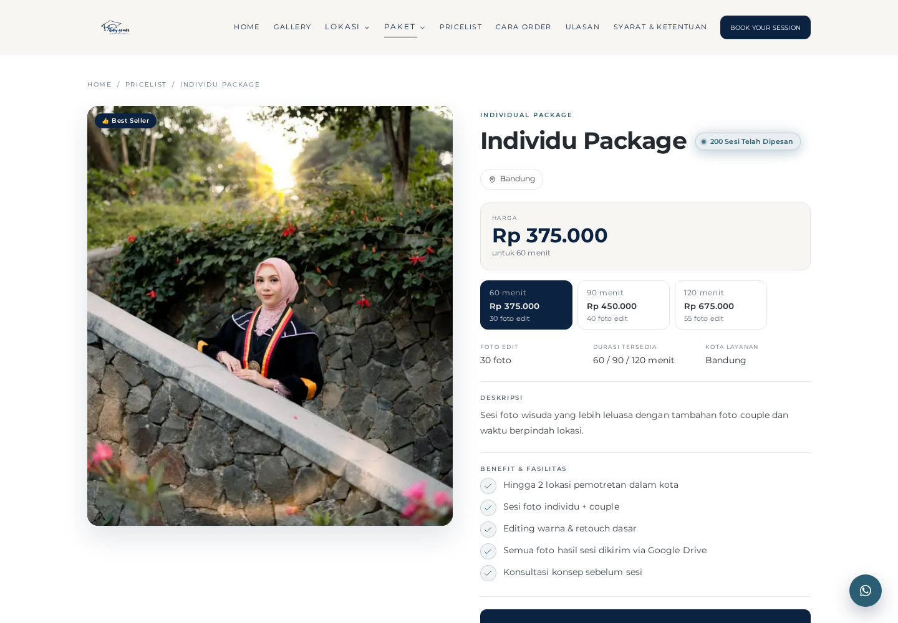
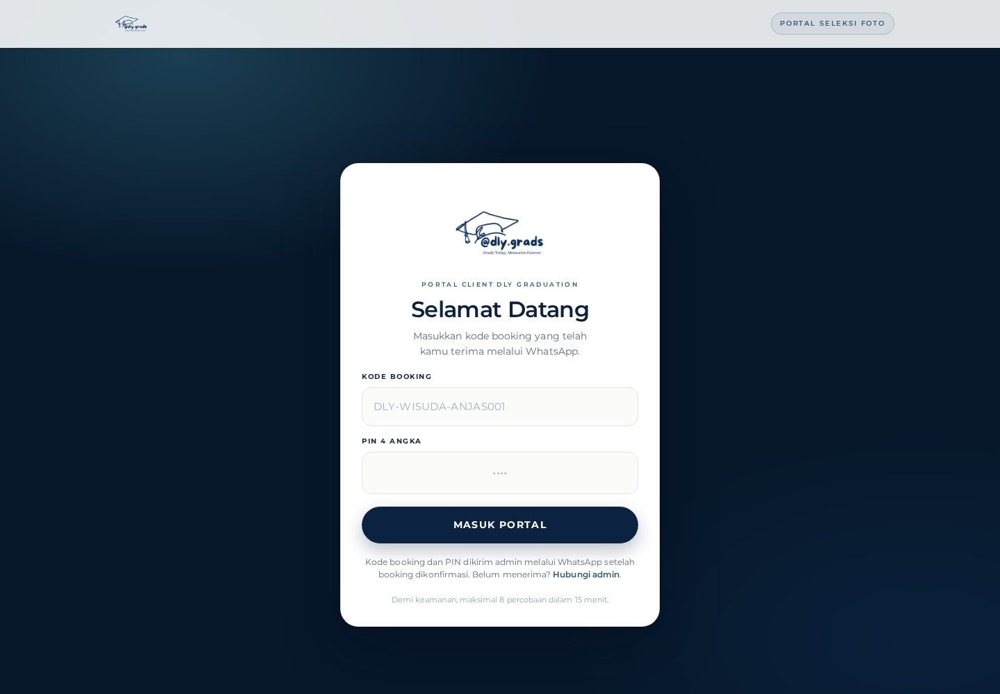
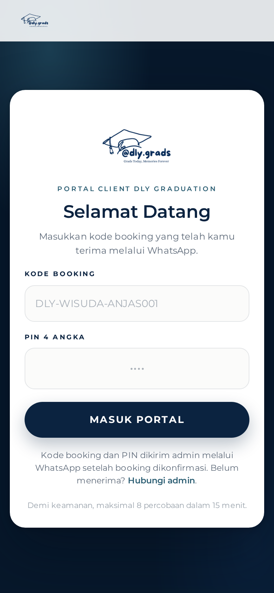
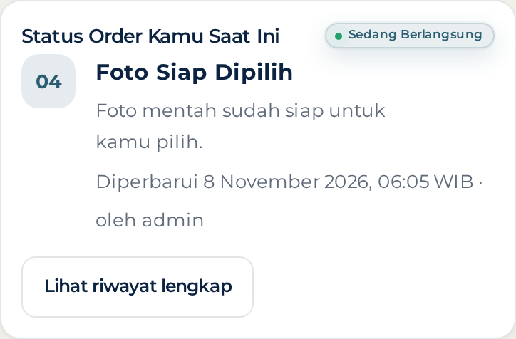
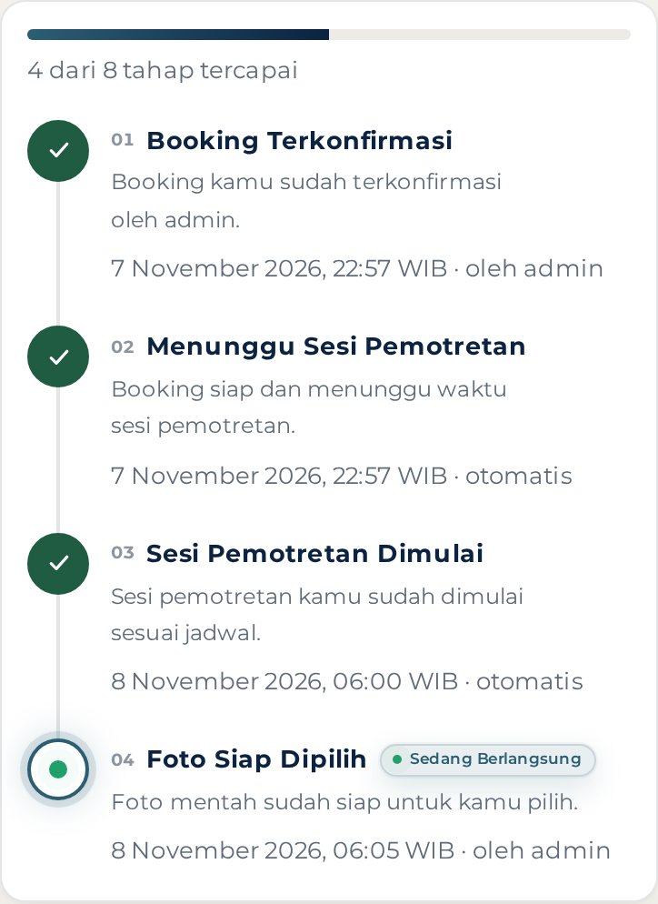

Hasil revisi 11–18: gallery menjadi satu jalur horizontal dengan overlay nama client, kartu portfolio klien lain satu per slide di HP, badge jumlah sesi sejajar judul dengan soft blue glow, harga panel “Harga” setebal sticky bar, logo resmi di login, serta tahap “Sesi Pemotretan Dimulai” yang aktif otomatis tepat pada jam sesi.









